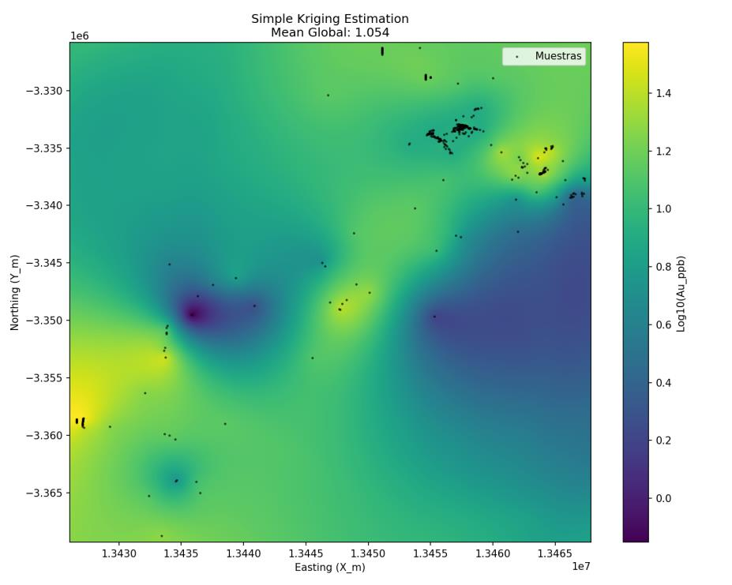
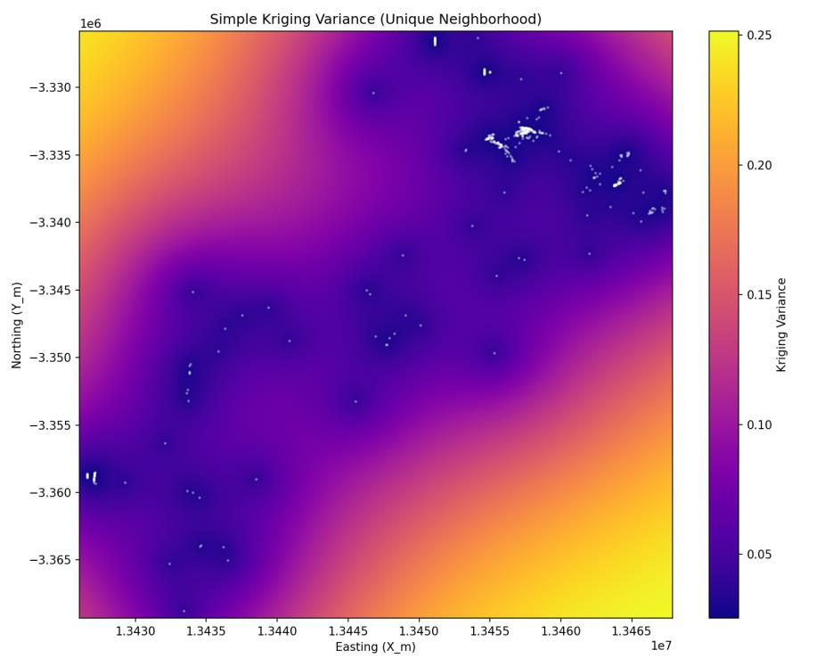
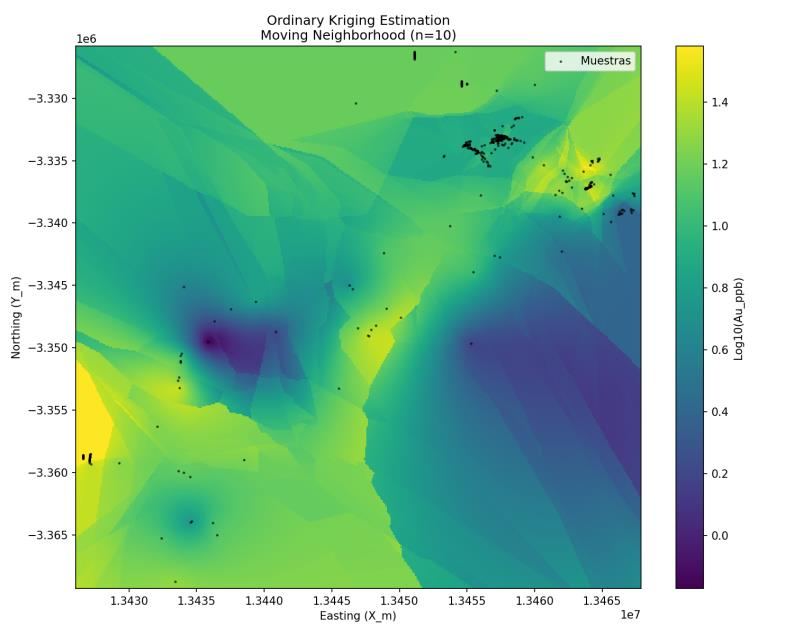
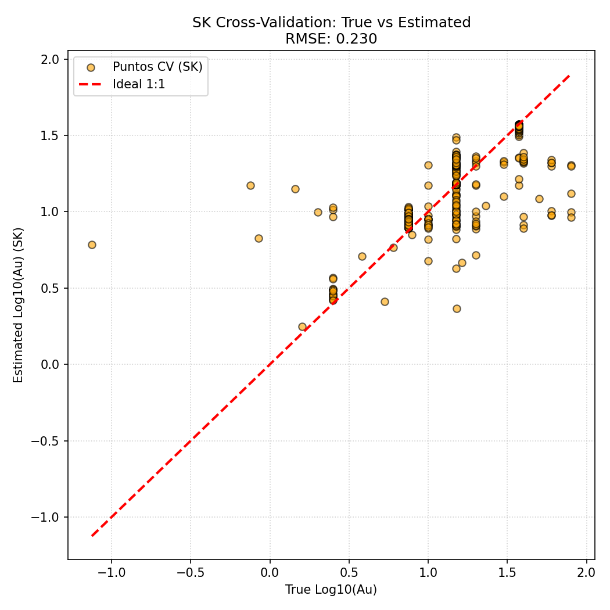
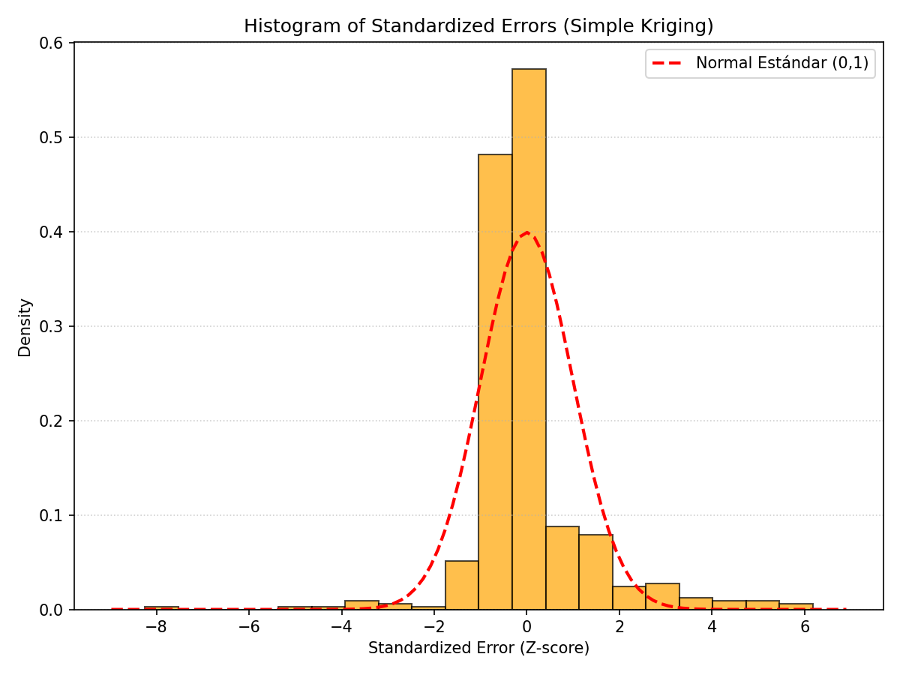
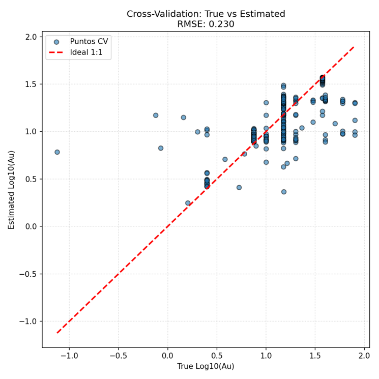
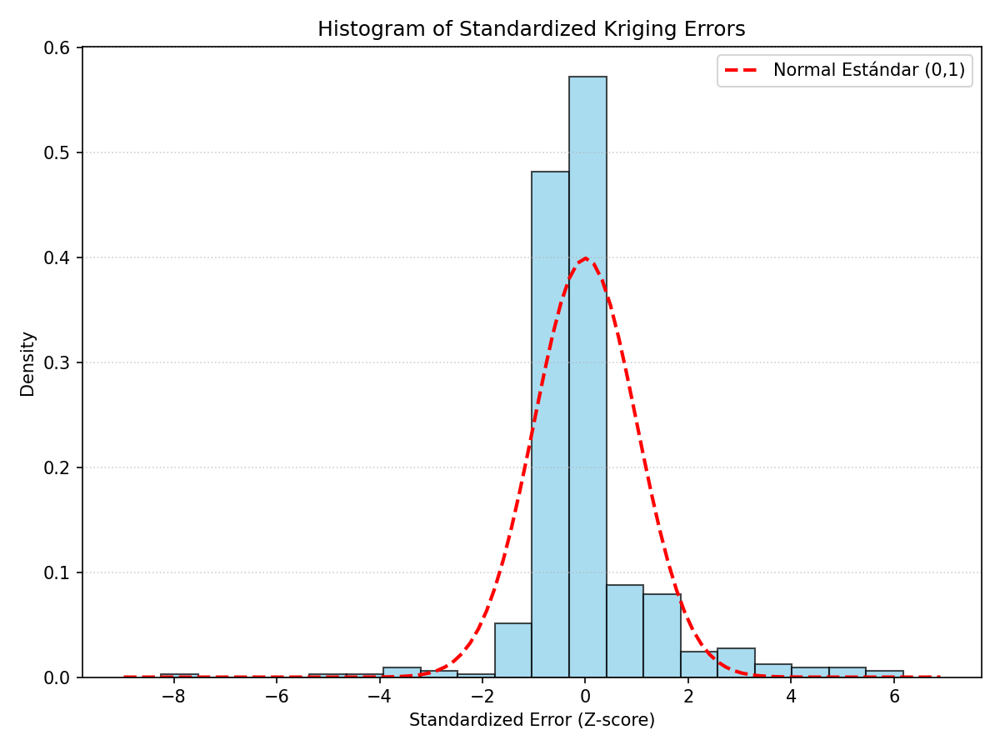

Capítulo 7 · SK y OK · RMSE 0,230 log · z hasta ±6
Kriging: la mejor estimación honesta
EL CAPÍTULO REFORZADO. Qué es kriging de verdad (sistema de 3 muestras resuelto a mano con el variograma del proyecto), SK vs OK sin trampas (la CV no los distingue), la varianza de kriging y sus colas pesadas, y las facetas del vecindario móvil explicadas.
Kriging es una media ponderada en la que los pesos no los pone la distancia sino el variograma. Este capítulo lo demuestra resolviendo a mano un sistema de tres muestras con el gaussiano del capítulo 6, y después mira los mapas reales: kriging simple con las 425 muestras a la vez y kriging ordinario con 10 vecinos, los dos con un error de validación de 0,230 en log10, un factor 1,70 en ppb. Ese empate tiene truco, y aquí se cuenta entero.
En este capítulo: el sistema resuelto a mano, qué cambia entre kriging simple y ordinario, los mapas y sus varianzas, las facetas, la validación cruzada y lo que no distingue, y si el resultado es suficiente.
Un kriging a mano, con el variograma del proyecto
Imagina un punto sin muestra, la diana, y tres muestras alrededor: s1 a 500 m hacia el este, s2 a 1.200 m hacia el norte y s3 a 3.000 m hacia el oeste. Kriging quiere estimar la diana como λ1 · z1 + λ2 · z2 + λ3 · z3, y su única pregunta es qué valen los tres pesos λ. La respuesta sale del variograma del capítulo 6: pepita 0,105, meseta 0,486, alcance 4.470 m. Con él se evalúa la semivarianza entre cada muestra y la diana, y entre cada par de muestras:
- Hacia la diana: s1, 500 m → γ = 0,119 · s2, 1.200 m → 0,179 · s3, 3.000 m → 0,387.
- Entre muestras: s1-s2, 1.300 m → 0,190 · s1-s3, 3.500 m → 0,425 · s2-s3, 3.231 m → 0,407.
Esos seis números son toda la información que usa el kriging. Con ellos se plantea el sistema de kriging ordinario: una ecuación por muestra, que dice que la semivarianza ponderada entre esa muestra y las demás debe igualar la semivarianza entre esa muestra y la diana, más una cuarta ecuación que obliga a que los pesos sumen 1. Esa condición es la que hace que la estimación no dependa de conocer la media, y trae consigo una incógnita extra, el multiplicador μ, que cuadra las cuentas. Cuatro ecuaciones, cuatro incógnitas. Resuelto:
- λ1 = 0,605 (la de 500 m) · λ2 = 0,278 (la de 1.200 m) · λ3 = 0,116 (la de 3.000 m) · μ = 0,017.
Tres lecturas. La muestra más cercana manda, pero no lo arrasa todo: la pepita de 0,105 dice que ni siquiera una muestra pegada a la diana es de fiar del todo, así que el kriging reparte. La muestra a 3.000 m, a dos tercios del alcance, todavía recibe un 11,6 %. Y si se compara con el inverso de la distancia al cuadrado, el reparto que haría cualquiera sin variograma, los pesos serían 0,832 / 0,145 / 0,023: el kriging le quita peso a la cercana y se lo da a las lejanas, porque sabe, por el variograma, cuánto vale de verdad la cercanía y cuánta información nueva trae cada muestra.
La varianza de kriging, en el mismo ejemplo
Junto a los pesos sale un segundo número gratis: la varianza de kriging, que en este caso vale 0,184 (desviación típica 0,43 en log10). Se calcula con los pesos, las semivarianzas hacia la diana y el multiplicador, y no usa los valores de las muestras: solo la geometría y el modelo. Por eso dos dianas con la misma configuración de vecinos tienen la misma varianza aunque una esté en oro y la otra en estéril. Y por eso la muestra de 3.000 m importa: sin ella, con solo s1 y s2, la varianza subiría a 0,193. Una muestra lejana cambia poco la estimación, pero sí reduce la incertidumbre.
Simple contra ordinario: la diferencia está en la media
El kriging simple (SK) supone que la media del depósito se conoce y es la misma en todas partes; aquí, la media de los logaritmos, 1,054. Sus pesos no tienen que sumar 1: lo que falta hasta 1 se le da a la media. En el ejemplo salen 0,585 / 0,261 / 0,087, que suman 0,934, y el 6,6 % restante tira de la estimación hacia 1,054. Con los mismos valores inventados, SK daría 1,127. Su varianza, 0,182, casi la misma.
El kriging ordinario (OK) no se fía de esa media: la reestima en cada vecindario, y de ahí la condición de que los pesos sumen 1. Donde la media local es distinta de la global, OK se adapta y SK tira hacia el centro. En un terreno con tendencia regional, como el que delató la línea de 1,81, esa diferencia es la que importa. En el proyecto, SK se corrió con vecindario único, todas las muestras a la vez, y OK con vecindario móvil de 10 muestras por punto, sobre la misma malla regular.
Los mapas






Kriging simple, vecindario único. Media global 1,054 en log10. Dos zonas mandan: un núcleo alto al noreste, por encima de 1,4, y un segundo núcleo al suroeste entre 1,2 y 1,4. Las transiciones son suaves porque cada punto escucha a las 425 muestras.
Su varianza. De 0,02 a 0,25, y es un mapa de la geometría del muestreo, no del oro: azul oscuro, por debajo de 0,05, donde las muestras se apiñan en el centro y el noreste; amarillo, por encima de 0,20, en esquinas y bordes donde se extrapola.
Kriging ordinario, 10 vecinos. Las mismas zonas, con más detalle local y bordes más nítidos, y algo nuevo: facetas poligonales. Cada vez que el conjunto de 10 vecinos cambia, la estimación salta.
Su varianza. De 0,03 a 0,35, con máximos un 40 % por encima de los del kriging simple: la desviación típica del error va de 0,17 a 0,59 en log10. Escuchar solo a 10 vecinos da nitidez y cuesta certidumbre en los bordes.
La validación cruzada. Cada muestra, estimada sin ella, contra su valor real: RMSE 0,230. Por debajo de 1,0 la nube sigue la diagonal; por encima, las estimaciones se quedan cortas. Es el suavizado de todo kriging lineal.
Los errores estandarizados. Error dividido por la desviación de kriging. Más del 95 % cae entre menos 2 y 2, con un pico más alto que la normal, y una cola derecha que llega hasta 6: en algunos sitios el error real es mucho mayor que el prometido.
Las facetas del vecindario móvil
El mapa ordinario está cosido de polígonos, y no es un defecto de dibujo. Con vecindario móvil, cada punto de la malla se estima con sus 10 muestras más cercanas; al desplazarse por la malla, llega un momento en que una muestra sale del conjunto y entra otra, y los pesos cambian de golpe. Esa frontera es una faceta. El kriging simple con vecindario único no las tiene porque nunca cambia de conjunto: siempre son las 425. Las facetas se ven más cuantos menos vecinos se usan, como enseñará el capítulo 8 con 5 vecinos, y se atenúan con más.
Lo que dice la varianza
La varianza de kriging mide la confianza en cada punto y, como en el ejemplo a mano, solo depende de dónde están las muestras y del modelo. Con kriging simple va de 0,02 a 0,25; con ordinario, de 0,03 a 0,35. Las zonas por debajo de 0,10 son de confianza alta, aptas para planificación detallada; las que superan 0,20 piden lectura cautelosa y son la prioridad natural de un sondeo de relleno.
La validación cruzada, y lo que no distingue
La validación cruzada quita cada muestra, la estima con las demás y compara. Tres diagnósticos: el error medio, la nube de real contra estimado, y el histograma de errores estandarizados. El RMSE es 0,230 en log10, que al deshacer el logaritmo es un factor de 1,70: una estimación típica se aparta del valor real multiplicando o dividiendo por 1,7. En el rango bajo y medio la nube sigue la diagonal; por encima de 1,0 en log10 las estimaciones se quedan cortas. Es el suavizado inherente a un estimador lineal que minimiza el error cuadrático regresando los extremos hacia la media, el sesgo condicional: lo alto se subestima y lo bajo se sobreestima.
Los errores estandarizados, el error dividido por la raíz de la varianza de kriging, deberían seguir una normal de media 0 y desviación 1. Se centran en cero, así que no hay sesgo; pero el pico es más alto que la normal, la mayoría de los errores son menores de lo que la varianza promete, y a la vez hay colas que llegan a 6, cuando más allá de 3 la normal asigna menos del 0,3 %. Es decir: para el sitio típico la varianza es algo pesimista, y para unos pocos sitios es muy optimista. Más del 95 % cae entre menos 2 y 2.
Y aquí la parte honesta. La validación del kriging ordinario devolvió también RMSE 0,230, y su nube de puntos y su histograma son idénticos punto por punto a los del kriging simple: las mismas posiciones, las mismas colas, solo cambia el color.


Entonces, ¿simple u ordinario?
Ordinario, pero por las razones correctas. No por el RMSE, que empata. Por los supuestos: OK no exige conocer una media constante en 62.000 km² de terreno con tendencia regional, y su media local se adapta a ella. Y por lo que se ve en el mapa: núcleos de enriquecimiento más nítidos al noreste y al suroeste. Lo paga con más varianza en los bordes (0,35 frente a 0,25) y con las facetas. Los mapas del resto del análisis son ordinarios con 10 vecinos.
¿Es suficiente?
Sí, con salvedades. Un RMSE de 0,230 está dentro de lo aceptable para una estimación preliminar de recursos, el estimador no tiene sesgo, y las zonas altas coinciden con los racimos del análisis exploratorio y con el alcance del variograma. Las salvedades son tres y son serias: el suavizado subestima las leyes altas, que es justo lo que una mina quiere conocer; las colas del histograma dicen que en algunos sitios el error es mucho mayor que el prometido; y en los bordes mal muestreados se extrapola. Para definir blancos de exploración sirve; para programar producción o clasificar reservas, no.
Lo que queda establecido
Kriging convierte el variograma en pesos, y el ejemplo a mano enseña cómo: 0,605 / 0,278 / 0,116 con una varianza de 0,184. Los mapas reales dan RMSE 0,230 con los dos métodos, la validación no los distingue, y se prefiere el ordinario por sus supuestos y su nitidez. El capítulo 8 prueba si alguna perilla mueve ese 0,230.